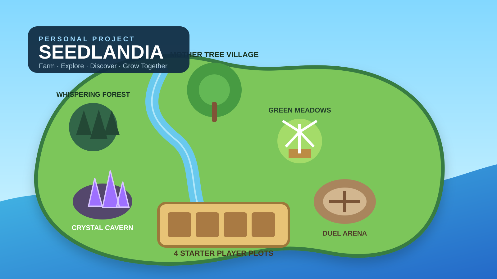

✿
Farm & grow
Starter plots anchor the first experience. Planting, harvesting, mutations, splicing, and upgrades give familiar actions a path toward deeper systems.
Visual and systems direction for a Roblox farming world built around planting, discovery, collection, player progression, pets, and future combat. The portfolio focus is the map language, HUD planning, and how the game’s features are organized for younger players without losing long-term depth.

The visual plan is organized around three recurring questions: is it fun, does it have a clear purpose, and does it create room for progression without making the screen or economy harder to understand?
Starter plots anchor the first experience. Planting, harvesting, mutations, splicing, and upgrades give familiar actions a path toward deeper systems.
Named biomes and landmarks create reasons to move beyond the farm: rare plants, materials, pets, resources, and discoveries live in different zones.
Characters, pets, discoveries, contribution systems, and later combat are intended to make older content stay useful instead of being discarded immediately.
The map concept separates progression areas visually so players can understand what each place is for before they memorize every system.
The interface direction favors compact buttons, icon-first navigation, collapsible/expandable control groups, a clear experience bar, and dedicated inventory/equipment space.
The project is designed to be enjoyable for younger players while still supporting long-term systems. New mechanics are checked for fun, purpose, economy impact, abuse potential, and security implications before becoming permanent.